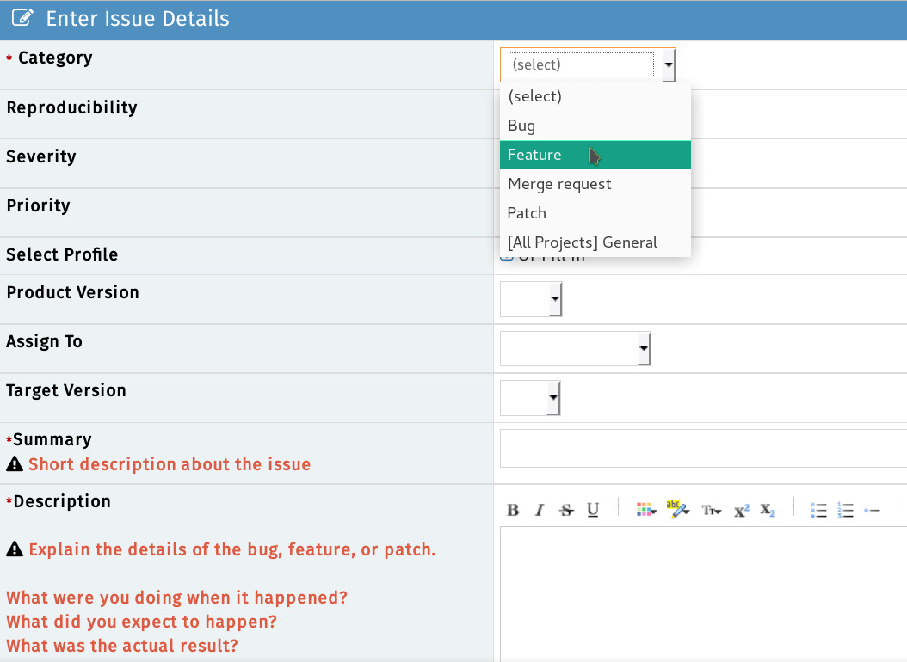
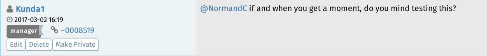
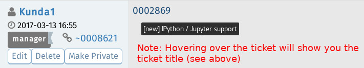
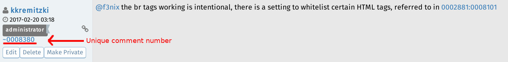
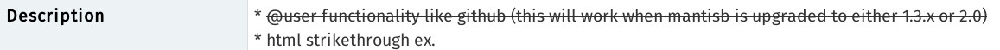
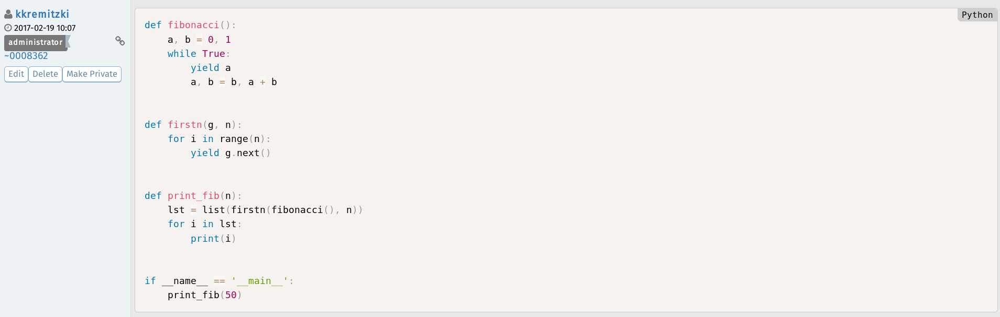
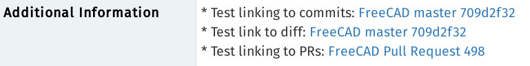

Tracker/es
center|link=https://mantisbt.org es el marco de seguimiento de errores que utiliza FreeCAD
{kind=link}
El FreeCAD BugTracker es el lugar para informar de errores, enviar solicitudes de nuevas funciones, parches o solicitar la fusión de su rama si ha desarrollado algo con Git. El sistema está dividido en Entornos de trabajo, así que sea específico y publique su solicitud en la subsección correspondiente. En caso de duda, déjela en la sección "FreeCAD".
Flujo de trabajo recomendado
{kind=link}
Como se muestra en el diagrama de flujo anterior, antes de crear incidencias, consulte siempre los foros y el sistema de seguimiento de errores para comprobar si su problema es conocido. Esto ahorra mucho tiempo y trabajo a los desarrolladores y voluntarios, quienes podrían dedicarlo a mejorar aún más FreeCAD.
Informar de errores
Si cree que ha encontrado un error, puede informar de este siempre y cuando haya seguido nuestras instrucciones paso a paso.
- Asegúrese de usar la versión más reciente de FreeCAD. NOTA: Es posible que su error se haya corregido en la versión de desarrollo (inestable). El usuario promedio usa la versión estable de FreeCAD.
- Asegúrase de que su error sea realmente un error, es decir, algo que debería funcionar pero no lo hace. Asegúrase de que el mismo error no se haya reportado antes buscando primero en el sistema de seguimiento de errores y en el foro.
- Recuerde: si no está seguro, no dude en explicar su problema/error en el [foro de ayuda https://forum.freecad.org/viewforum.php?f=3] y preguntar qué hacer.
- NOTA: antes de publicar en el foro, lea las [directrices del foro https://forum.freecad.org/viewtopic.php?f=3&t=2264].
- Describa el problema con la mayor claridad posible y cómo se puede reproducir. Si no podemos verificar el error, es posible que no podamos solucionarlo.
- Esto significa informar del error de forma clara, con formato adecuado y paso a paso, para que incluso un usuario aficionado pueda reproducirlo.
- Se recomienda incluir capturas de pantalla del error. Usuarios de Windows: no adjunten capturas de pantalla en formato Word o PDF. Utilicen la herramienta Recortes de Windows para guardar la captura como imagen PNG.
- Se recomienda aún más incluir un GIF animado o una grabación de pantalla para aumentar la probabilidad de reproducir el problema.
- Añadan un archivo de ejemplo de FreeCAD (.FCStd) para que los desarrolladores/probadores puedan reproducir el error rápidamente.
- No compriman el archivo *.FCStd, ya está comprimido.
- El tamaño de los archivos adjuntos es limitado. Si su archivo *.FCStd es demasiado grande para adjuntarlo, puede usar un servicio de almacenamiento en la nube (muchos son gratuitos, como Google Drive, Microsoft OneDrive y Dropbox). * Incluya toda la información del botón "Copiar al portapapeles" en el cuadro de diálogo Ayuda (menú) -> Acerca de FreeCAD. Asegúrese de que sus datos incluyan su versión de OCC u OCE.
- Por favor, envíe un informe independiente para cada error.
- Si su error provoca un fallo en FreeCAD y su sistema lo admite, puede intentar ejecutar un seguimiento de depuración y adjuntarlo al informe. Esto puede ahorrarles mucho tiempo a los desarrolladores al identificar la causa del fallo. Consulte Depuración para obtener más detalles.
Solicitar funcionalidades
Si quieres que aparezca algo en FreeCAD que aún no está implementado, no se trata de un error, sino una solicitud de funcionalidad. También puedes notificarlo en el mismo tracker (lo archivas como una petición de función, en lugar de errores), pero ten en cuenta que no hay garantías de que tus deseos se cumplan.
- IMPORTANTː Before requesting a potential Feature Request please be certain that you are the first one doing so by searching the forums and the bugtracker. If you have concluded that there are no pre-existing tickets/discussions the next step is toː
- Start a forum thread to discuss your feature request with the community via the Open Discussion forum.
- Once the community agrees that this is a valid Feature, you then can open a ticket on the tracker (file it under feature request instead of bug).
- NOTE #1 To keep things organized please remember to link the forum thread URL into the ticket and the ticket number (as a link) in to the forum thread.
- NOTE #2 Keep in mind there are no guarantees that your wish will be fulfilled.
{kind=link}

Envío de parches
En caso de haber programado la corrección de un error, una extensión o algo que puede ser de uso público en FreeCAD, crea un parche con la herramienta Subversion diff y preséntalo en el mismo tracker (lo archivas como parche).
Requesting merge
(Same guidelines as Submiting patches)
If you have created a git branch containing changes that you would like to see merged into the FreeCAD code, you can ask there to have your branch reviewed and merged if the FreeCAD developers are OK with it. You must first publish your branch to a public git repository (github, gitlab, bitbucket, sourceforge etc...) and then give the URL of your branch in your merge request.
MantisBT Tips and Tricks
MantisBT Markup
MantisBT (Mantis Bug Tracker) has it's own unique markup.
- @mention - works just like on GitHub where if you prepend '@' to someone's username they will receive an email that they have been 'mentioned' in a ticket thread
{kind=link}

- #1234 - By adding a hash tag in front of a number a shortcut to link to another ticket within MantisBT will present.
- Note: if you hover over a ticket it will show you the summary + if the ticket is closed, it will be struck-through like
#1234.
- Note: if you hover over a ticket it will show you the summary + if the ticket is closed, it will be struck-through like
{kind=link}

- ~5678 - a shortcut that links to a bug note within a ticket. This can be used to reference someone's response within the thread. Each person that posts will show a unique ~#### number next to their username. If you look at the image in the example, you see that the shortcut is referencing the ticket number:comment number of said ticket
{kind=link}

- <del></del> - Using these tags will
strikeout text.
{kind=link}

- <code></code> - To present a line or block of code, use this tag and it will colorize and differentiate it elegantly.
{kind=link}

MantisBT BBCode
In addition to the above MantisBT Markup one also has the possibility to use BBCode format. For a comprehensive list see the BBCode plus plugin page. Here is a list of supported BBCode tagsː
[img][/img] - Images
[url][/url] - Links
[email][/email] - Email addresses
[color=red][/color] - Colored text
[highlight=yellow][/highlight] - Highlighted text
[size][/size] - Font size
[list][/list] - Lists
[list=1][/list] - Numbered lists (number is starting number)
[*] - List items
[b][/b] - Bold
[u][/u] - underline
[i][/i] - Italic
[s][/s] - Strikethrough
[left][/left] - Left align
[center][/center] - Center
[right][/right] - Right align
[justify][/justify] - Justify
[hr] - Horizontal rule
[sub][/sub] - Subscript
[sup][/sup] - Superscript
[table][/table] - Table
[table=1][/table] - Table with border of specified width
[tr][/tr] - Table row
[td][/td] - Table column
[code][/code] - Code block
[code=sql][/code] - Code block with language definition
[code start=3][/code] - Code block with line numbers starting at number
[quote][/quote] - Quote by *someone* (no name)
[quote=name][/quote] - Quote by *name*
MantisBT <=> GitHub Markup
Below are special MantisBT Source-Integration plugin keywords which will link to the FreeCAD GitHub repo. See GitHub and MantisBT.
- c:FreeCAD:git commit hash: - c stands for 'commit'. FreeCAD stands for the FreeCAD GitHub repo. 'git commit hash' is the specific git commit hash to reference. Note: the trailing colon is necessary. Exampleː
cːFreeCADː709d2f325db0490016807b8fa6f49d1c867b6bd8ː - d:FreeCAD:git commit hash: - similar to the above, d stands for 'diff' which will provide a Diff view of the commit. Exampleː
dːFreeCADː709d2f325db0490016807b8fa6f49d1c867b6bd8ː - p:FreeCAD:pullrequest: - similar to the above, p stands for Pull Request. Exampleː
pːFreeCADː498ː
{kind=link}

GitHub and MantisBT
The FreeCAD bugtracker has a plug-in called Source Integration which essentially ties both the FreeCAD GitHub repo to our MantisBT tracker. It makes it easier to track and associate git commits with their respective MantisBT tickets. The Source Integration plugin scans the git commit messages for specific keywords in order to execute the following actions:
Note The below keywords need to be added in the git commit message and not the PR subject
Remotely referencing a ticket
Using this pattern will automagically associate a git commit to a ticket (Note: this will not close the ticket.) The format MantisBT will recognize:
- bug #1234
- bugs #1234, #5678
- issue #1234
- issues #1234, #5678
- report #1234
- reports #1234, #5678
For the inquisitive here is the regex MantisBT uses for this operation:
/(?:bugs?|issues?|reports?)+\s*:?\s+(?:#(?:\d+)[,\.\s]*)+/i
Remotely resolving a ticket
The format MantisBT will recognize:
- fix #1234
- fixed #1234
- fixes #1234
- fixed #1234, #5678
- fixes #1234, #5678
- resolve #1234
- resolved #1234
- resolves #1234
- resolved #1234, #5678
- resolves #1234, #5678
For the inquisitive here is the regex MantisBT uses for this operation:
/(?:fixe?d?s?|resolved?s?)+\s*:?\s+(?:#(?:\d+)[,\.\s]*)+/i
- Getting started
- Installation: Download, Windows, Linux, Mac, Additional components, Docker, AppImage, Ubuntu Snap
- Basics: About FreeCAD, Interface, Mouse navigation, Selection methods, Object name, Preferences, Workbenches, Document structure, Properties, Help FreeCAD, Donate
- Help: Tutorials, Video tutorials
- Workbenches: Std Base, Assembly, BIM, CAM, Draft, FEM, Inspection, Material, Mesh, OpenSCAD, Part, PartDesign, Points, Reverse Engineering, Robot, Sketcher, Spreadsheet, Surface, TechDraw, Test Framework
- Hubs: User hub, Power users hub, Developer hub